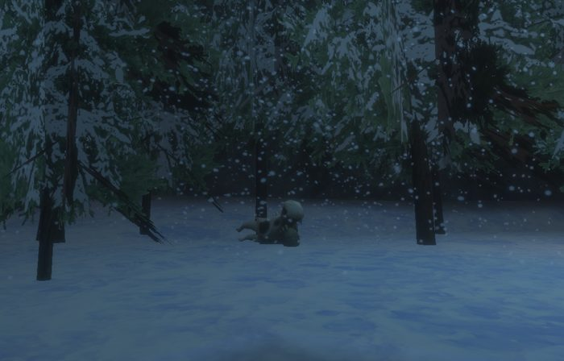

Glinting Hollow
To get access, one must first complete the Glinting Hollow Key Quest.
Map

Map legend (from the wiki map box)
1. 2.
Named mobs
| Named | Lvl | Race / class | Where | Known loot (hover) |
|---|---|---|---|---|
| Softpaws wiki | 41 | Wolf | 1st Floor | Wolfskin Gloves, Wolfclaws |
| Thornbark wiki | 41 | Treant | 1st Floor | Thornbark Bracer, Barkfall Vestment, Barkweave Mask, Thornbark Mantle |
| Strig wiki | 42-44 | Goblin / Enchanter | 2nd Floor | Goblin Fang, Strig's Cuirass, Grinning Mask, Charming Trinket |
| Shadowfunnel wiki | 42-44 | Spider | 3rd Floor | Dense Plate Gloves, Dense Plate Boots, Spinnershield Cape |
| Brightspark wiki | 45 | Wisp | 2nd Floor | Bright Glowing Orb, Brightspark Fuel |
| A forgotten shadow wiki | 45 | shadowman | 3rd Floor | Shadowed Backpack, Silentfold Hauberk, Shadow Footwraps |
| Hrask wiki | ~45 | Bear | 4th Floor | Polar Cloak, Glacial Fists, Frozen Bear Pelt |
| Icecore | 45 | Elemental / Melee | 5th Floor, Ice ring | Wristguard of Ice, Brainfreeze Visage, Frosted Core |
| Sylvara Winterveil wiki | ~45 | Drad | 4th Floor | Wise Crown |
| an iceweb matriarch | 45 | Spider / Spellblade | - | Iced Fang |
| a myconid prince wiki | 46 | Shaman / Shaman | 6th Floor | Fungal Robe |
| Gazer wiki | 47 | Evil Eye / Enchanter | 6th Floor | Trinket of the Eye, Inquisitive Pendant |
| A myconid price wiki | ? | Myconid | Floor 6, near tall white mushroom | Edible Spore, Myconid Spore |
Mobs & NPCs (camps by level)
Rows with a level are huntable camps; rows without are usually town NPCs or not yet documented.
| Name | Lvl | Race | Class | Where | Notes |
|---|---|---|---|---|---|
| a flourishing treant wiki | 38 | Treant | - | - | Fresh Squirrel Meat, Broken Twig, Wood, Rusty Iron Kite Shield, Rusty Iron Tower Shield |
| a prowling wolf wiki | 38 | Wolf | - | - | Raw Wolf Fillet, High-Quality Wolf Pelt, Wolf Tooth, Wolf Blood, Primeval Blood |
| a snarling wolf wiki | 38 | Wolf | - | - | Raw Wolf Fillet, High-Quality Wolf Pelt, Wolf Tooth, Wolf Blood, Primeval Blood |
| a treant wiki | 38 | Treant | - | - | Fresh Squirrel Meat, Broken Twig, Wood, Rusty Iron Kite Shield, Rusty Iron Tower Shield |
| a glowing wisp wiki | 41-42 | Wisp | Wizard | Second floor in the pond | Wisp Essence |
| a pale wisp wiki | 41-42 | Wisp | Fighter | Second floor in the pond | Wisp Essence |
| a large shadow wiki | ~42 | Shadow | - | 3rd Floor | |
| a laughing gobling wiki | ~42 | Goblin | - | 2nd Floor | Lucky Coin |
| a mystic gobling wiki | ~42 | Goblin | Shaman | 2nd Floor | |
| a predatory spider wiki | ~42 | Spider | - | 3rd Floor | Sturdy Spider Silk, Agile Spider Legs, Deadly Spider Venom Sac, Shadowsilk Cocoon |
| a wandering spider wiki | ~42 | Spider | - | 3rd Floor | Sturdy Spider Silk, Agile Spider Legs, Deadly Spider Venom Sac |
| a whispering shadow wiki | ~42 | Shadow | - | 3rd Floor | |
| a crystalline hunter | ~43 | Spider | - | 5th Floor | |
| a crystalline spider | ~43 | Spider | - | 5th Floor | |
| a frostbound elemental | ~43 | Elemental | - | 5th Floor | |
| a blinking evil eye wiki | 44-45 | Evil Eye | Wizard | 6th Floor | |
| a focused evil eye wiki | 44-45 | Evil Eye | Spellblade | 6th Floor | |
| a frostbloom dryad wiki | ~44 | Dryad | - | 4th Floor | |
| a melding myconid | 44 | Myconid | Fighter | 6th Floor | |
| a snowhide bear wiki | ~44 | Dryad | - | 4th Floor | Raw Bear Fillet |
| a winterveil dryad wiki | ~44 | Dryad | - | 4th Floor | |
| a spreading myconid | 45 | Myconid | Shaman | 6th Floor |
Quests
| Quest | Reward | Giver | Min lvl |
|---|---|---|---|
| Glinting Hollow Key Quest | Glowing Fae Scale | Scout Brightleaf | Unknown |
| Potions for Veylith Frosttongue | Unknown | Veylith the Frosttongue | Unknown |
Gear that drops here
| Slot | Item | Key stats (wiki) | How to get | Lvl | Classes |
|---|---|---|---|---|---|
| Low-Quality Wolf Pelt | no stats listed on wiki | Drop: a shadow wolf (lvl -) — Keeper's Bight, By Evershade Weald Drop: a forest stalker (lvl -) — Keeper's Bight, - Named drop: Timberfang (lvl 20-25?) — Keeper's Bight, Lower Cliffs Drop: a canyon stalker (lvl -) — Keeper's Bight, - | 1 | class unconfirmed | |
| Wolf Blood | no stats listed on wiki | Vendor: A Shady Merchant Drop: a shadow wolf (lvl -) — Keeper's Bight, By Evershade Weald Drop: a forest stalker (lvl -) — Keeper's Bight, - Drop: a canyon stalker (lvl -) — Keeper's Bight, - | 1 | class unconfirmed | |
| Wolf Tooth | no stats listed on wiki | Drop: a shadow wolf (lvl -) — Keeper's Bight, By Evershade Weald Drop: A beguiled wolf (lvl unconfirmed) — Keeper's Bight Drop: a forest stalker (lvl -) — Keeper's Bight, - Drop: a canyon stalker (lvl -) — Keeper's Bight, - | 1 | class unconfirmed | |
| Cabbage | no stats listed on wiki | Vendor: A cook (Faelindral) — Faelindral; Night Harbor; a grocer Drop: an ashira lookout (lvl -) — Sungreet Strand, - Drop: an ashira warrior (lvl 6-7) — Sungreet Strand, - Drop: an ashira shaman (lvl -) — Sungreet Strand, - | 2 | class unconfirmed | |
| Wolf Heart | no stats listed on wiki | Drop: an obedient sniffer (lvl ~38-39) — Shallow Shoals, Black Shoals Fortress Drop: A black wolf pup (lvl unconfirmed) — Shallow Shoals Drop: A brown wolf (lvl unconfirmed) — Shallow Shoals Drop: A black wolf (lvl unconfirmed) — Shallow Shoals | 4 | class unconfirmed | |
| Spectral Dust | no stats listed on wiki | Drop: a ghastly peasant (lvl unconfirmed) — Glass Flats Drop: a haunted messenger (lvl unconfirmed) — Glass Flats Drop: a risen servant (lvl unconfirmed) — Glass Flats Drop: a haunted traveler (lvl unconfirmed) — Glass Flats | 8 | class unconfirmed | |
| Secondary | Worn Ironbark Buckler | AC 10 | Drop: a Plagueborn knight (lvl ~42-44) — Fallen Pass, Western Beach Shrine, Elder Drake area Drop: a Plagueborn worshipper (lvl ~36-37) — Fallen Pass, Undead Citizens Drop: a Plagueborn veteran (lvl ~42-44) — Fallen Pass, Elder Drake area Drop: a dusty skeleton (lvl -) — Fallen Pass, - | 17 | BRD BST CLR DRU FTR INQ PAL RNG ROG SHD SHM SPB |
| Cotton Scraps | no stats listed on wiki | Drop: a sand giant scout (lvl -) — Fallen Pass, Beach Drop: a hired spellslinger (lvl -) — Fallen Pass, - Drop: a wererat (lvl 31-33) — Fallen Pass, Smuggler Cave Named drop: a smuggler (lvl unconfirmed) — Fallen Pass | 27 | class unconfirmed | |
| Primary, Secondary | Cracked Ironbark Staff | DMG 9 / DLY 33 | Drop: a poacher (lvl ~28-30) — Keeper's Bight, - Drop: a poacher bruiser (lvl 28-30) — Keeper's Bight, Poacher Camp, Bear Cave Drop: a poacher pathfinder (lvl 28-30) — Keeper's Bight, Poacher Camp, Bear Cave Named drop: Poacher Garrus (lvl >35) — Keeper's Bight, Poacher Camp | 27 | All classes |
| Iron Scraps | no stats listed on wiki | Drop: a poacher (lvl ~28-30) — Keeper's Bight, - Named drop: Poacher Tolan (lvl >35) — Keeper's Bight, Poacher Camp Drop: a poacher bruiser (lvl 28-30) — Keeper's Bight, Poacher Camp, Bear Cave Drop: a poacher pathfinder (lvl 28-30) — Keeper's Bight, Poacher Camp, Bear Cave | 27 | class unconfirmed | |
| Leather Scraps | no stats listed on wiki | Drop: a veteran brigand (lvl ~31+) — Glass Flats, - Drop: a cultist lookout (lvl 43) — Glass Flats, - Drop: a cultist guard (lvl 44) — Glass Flats, - Drop: a highwayman prospect (lvl ~31+) — Glass Flats, - | 27 | class unconfirmed | |
| Feet | Rusty Iron Chain Boots | AC 10 | Drop: a Witchguard oracle (lvl unconfirmed) — Shallow Shoals Drop: a Witchguard veles (lvl unconfirmed) — Shallow Shoals Drop: a Witchguard sacramir (lvl ~39+) — Shallow Shoals, Black Shoals Fortress Drop: a Witchguard shaman (lvl unconfirmed) — Shallow Shoals | 27 | BRD CLR FTR INQ PAL RNG ROG SHD SHM |
| Primary, Secondary | Rusty Iron Scimitar | DMG 9 / DLY 36 | Drop: a Witchguard cultor (lvl ~39+) — Shallow Shoals, Black Shoals Fortress Drop: a Witchguard defiler (lvl unconfirmed) — Shallow Shoals Drop: a Witchguard venator (lvl unconfirmed) — Shallow Shoals Drop: a Witchguard myrmidon (lvl unconfirmed) — Shallow Shoals | 27 | ARC BRD BST DRU FTR INQ PAL RNG ROG SHD SPB WIZ |
| Primary, Secondary | Rusty Iron Longsword | DMG 10 / DLY 38 | Drop: a flourishing treant (lvl 38) — Glinting Hollow, - Drop: a goblin spiritbinder (lvl unconfirmed) — Shallow Shoals Drop: a Witchguard stalker (lvl unconfirmed) — Shallow Shoals Drop: a craven cultist (lvl -) — Shallow Shoals, Pirate Island | 27 | ARC BRD BST FTR INQ PAL RNG ROG SHD SPB WIZ |
| Secondary | Rusty Iron Tower Shield | AC 16 | Drop: a Plagueborn worshipper (lvl ~36-37) — Fallen Pass, Undead Citizens Drop: a Plagueborn knight (lvl ~42-44) — Fallen Pass, Western Beach Shrine, Elder Drake area Drop: an assistant jailer (lvl unconfirmed) — Fallen Pass Drop: a Plagueborn watchman (lvl ~52-53) — Fallen Pass, Upper Saman | 27 | FTR INQ PAL SHD |
| Secondary | Rusty Iron Kite Shield | AC 13 | Drop: a Witchguard cultor (lvl ~39+) — Shallow Shoals, Black Shoals Fortress Drop: a Witchguard veles (lvl unconfirmed) — Shallow Shoals Drop: a Witchguard myrmidon (lvl unconfirmed) — Shallow Shoals Drop: Fizzle Screwtape (lvl -) — Shallow Shoals, Zaedin's Landing | 27 | BRD FTR INQ PAL RNG SHD |
| Neck | Tattered Cotton Gorget | AC 3 | Named drop: Poacher Garrus (lvl >35) — Keeper's Bight, Poacher Camp Drop: a poacher (lvl ~28-30) — Keeper's Bight, - Drop: a treant (lvl 38) — Glinting Hollow, - Drop: a cultist guard (lvl 44) — Glass Flats, - | 27 | All classes |
| Primary | Worn Ironbark Great Staff | DMG 16 / DLY 46 | Drop: a Witchguard cultor (lvl ~39+) — Shallow Shoals, Black Shoals Fortress Drop: a corrupted monk (lvl unconfirmed) — Shallow Shoals Drop: a Witchguard defiler (lvl unconfirmed) — Shallow Shoals Drop: a Benu Dhai brother (lvl unconfirmed) — Shallow Shoals | 27 | BST CLR DRU ELE ENC FTR MNK NEC PAL SHM SPB WIZ |
| Primary | Rusty Iron Battle Axe | DMG 18 / DLY 54 | Drop: a Witchguard oracle (lvl unconfirmed) — Shallow Shoals Drop: a Witchguard defiler (lvl unconfirmed) — Shallow Shoals Drop: a corrupted monk (lvl unconfirmed) — Shallow Shoals Drop: a Witchguard stalker (lvl unconfirmed) — Shallow Shoals | 28 | BST FTR INQ PAL SHD |
| Shoulders | Rusty Iron Plate Pauldrons | AC 16 | Drop: a treant (lvl 38) — Glinting Hollow, - Drop: a weeping visitor (lvl 29-38) — Sunken Resort, - Drop: a withered corpse (lvl -) — Rothold, - Drop: a discarded corpse (lvl -) — Rothold, - | 28 | CLR FTR INQ PAL SHD |
| Primary, Secondary | Rusty Iron Warhammer | DMG 8 / DLY 30 | Drop: a Witchguard signifer (lvl ~41+) — Shallow Shoals, Black Shoals Fortress Drop: a Witchguard cultor (lvl ~39+) — Shallow Shoals, Black Shoals Fortress Drop: a Witchguard sacramir (lvl ~39+) — Shallow Shoals, Black Shoals Fortress Drop: a Witchguard veles (lvl unconfirmed) — Shallow Shoals | 28 | BRD BST CLR DRU FTR INQ MNK PAL RNG ROG SHD SHM SPB |
| Primary | Rusty Iron Great Scythe | DMG 16 / DLY 46 | Drop: a Plagueborn veteran (lvl ~42-44) — Fallen Pass, Elder Drake area Drop: a Plagueborn knight (lvl ~42-44) — Fallen Pass, Western Beach Shrine, Elder Drake area Named drop: a smuggler (lvl unconfirmed) — Fallen Pass Drop: a Plagueborn patrolman (lvl ~34-36) — Fallen Pass, Undead Citizens | 28 | BST DRU FTR INQ NEC RNG SHD SPB |
| Primary | Rusty Iron Greatsword | DMG 13 / DLY 50 | Drop: a Witchguard stalker (lvl unconfirmed) — Shallow Shoals Drop: a Witchguard medicus (lvl unconfirmed) — Shallow Shoals Drop: a Witchguard signifer (lvl ~41+) — Shallow Shoals, Black Shoals Fortress Drop: a Witchguard cultor (lvl ~39+) — Shallow Shoals, Black Shoals Fortress | 28 | BRD BST FTR INQ PAL RNG SHD SPB |
| Primary, Secondary | Rusty Iron Shortsword | DMG 7 / DLY 26 | Drop: a corrupted monk (lvl unconfirmed) — Shallow Shoals Drop: a Witchguard medicus (lvl unconfirmed) — Shallow Shoals Drop: a Witchguard veles (lvl unconfirmed) — Shallow Shoals Drop: a Witchguard serverat (lvl ~39+) — Shallow Shoals, Black Shoals Fortress | 28 | ARC BRD BST FTR INQ PAL RNG ROG SHD SPB WIZ |
| Wrist | Tattered Leather Bracer | AC 7 | Drop: a flourishing treant (lvl 38) — Glinting Hollow, - Drop: a laughing gobling (lvl ~42) — Glinting Hollow, 2nd Floor Drop: a cultist lookout (lvl 43) — Glass Flats, - Drop: a bone fiend (lvl -) — Glass Flats, - | 28 | ARC BRD BST CLR DRU FTR INQ MNK PAL RNG ROG SHD SHM SPB |
| Range | Worn Ironbark Bow | DMG 13 / DLY 40 | Drop: a cultist lookout (lvl 43) — Glass Flats, - Drop: a crystallized skeleton (lvl ~35-40) — Glass Flats, - Drop: a highwayman prospect (lvl ~31+) — Glass Flats, - Drop: a seasoned marauder (lvl ~31+) — Glass Flats, - | 28 | ARC BST FTR PAL RNG ROG SHD SPB |
| High-Quality Wolf Pelt | no stats listed on wiki | Drop: a trained wolf (lvl unconfirmed) — Blacktide Bay Drop: a patrolling wolf (lvl unconfirmed) — Blacktide Bay Drop: an obedient sniffer (lvl ~38-39) — Shallow Shoals, Black Shoals Fortress Drop: a snarling wolf (lvl 38) — Glinting Hollow, - | 29 | class unconfirmed | |
| Broken Twig | no stats listed on wiki | Drop: a treant (lvl 38) — Glinting Hollow, - Drop: A flourishing treant (lvl 38) — Glinting Hollow, - | 38 | class unconfirmed | |
| Eth-ur Metallurgical Journal Page | no stats listed on wiki | Named drop: Father Rau (lvl 43-44) — Shallow Shoals, Werejackal Island Drop: a Plagueborn watchman (lvl ~52-53) — Fallen Pass, Upper Saman Drop: a Plagueborn knight (lvl ~42-44) — Fallen Pass, Western Beach Shrine, Elder Drake area Drop: a Plagueborn veteran (lvl ~42-44) — Fallen Pass, Elder Drake area | 38 | DRU | |
| Fresh Squirrel Meat | no stats listed on wiki | Named drop: Thornbark (lvl 41) — Glinting Hollow, 1st Floor Drop: a treant (lvl 38) — Glinting Hollow, - Drop: A flourishing treant (lvl 38) — Glinting Hollow, - | 38 | class unconfirmed | |
| Glinting Scale of Nature | no stats listed on wiki | Drop: a snarling wolf (lvl 38) — Glinting Hollow, - Drop: a prowling wolf (lvl 38) — Glinting Hollow, - Named drop: Thornbark (lvl 41) — Glinting Hollow, 1st Floor | 38 | class unconfirmed | |
| Primeval Blood | no stats listed on wiki | Drop: a giant wolf (lvl ~54) — Vale of Zintar, Giant City Drop: a prowling wolf (lvl 38) — Glinting Hollow, - Drop: a snarling wolf (lvl 38) — Glinting Hollow, - | 38 | class unconfirmed | |
| Raw Wolf Fillet | no stats listed on wiki | Drop: an obedient sniffer (lvl ~38-39) — Shallow Shoals, Black Shoals Fortress Drop: a snarling wolf (lvl 38) — Glinting Hollow, - Drop: a prowling wolf (lvl 38) — Glinting Hollow, - Drop: a giant wolf (lvl ~54) — Vale of Zintar, Giant City | 38 | class unconfirmed | |
| Torn Fur | no stats listed on wiki | Drop: a prowling wolf (lvl 38) — Glinting Hollow, - Drop: a snarling wolf (lvl 38) — Glinting Hollow, - | 38 | class unconfirmed | |
| Wood | no stats listed on wiki | Drop: Wood Pile (lvl unconfirmed) — Shaded Dunes Drop: Rich Wood Pile (lvl unconfirmed) — Shaded Dunes Named drop: Thornbark (lvl 41) — Glinting Hollow, 1st Floor Drop: a flourishing treant (lvl 38) — Glinting Hollow, - | 38 | class unconfirmed | |
| Chest | Barkfall Vestment | AC 19, STA +1, INT +6, CHA +4 | Named drop: Thornbark (lvl 41) — Glinting Hollow, 1st Floor | 41 | ELE ENC NEC WIZ |
| Face | Barkweave Mask | AC 8, WIS +3, Mana +10, SV Cold +3, SV Poison +3 | Named drop: Thornbark (lvl 41) — Glinting Hollow, 1st Floor | 41 | BST CLR DRU PAL RNG SHM |
| Wrist | Thornbark Bracer | AC 25, STR +7, STA +2, HP +10 | Named drop: Thornbark (lvl 41) — Glinting Hollow, 1st Floor | 41 | CLR FTR INQ PAL SHD |
| Back | Thornbark Mantle | AC 8, STA +9, HP +15, Mana +5 | Named drop: Thornbark (lvl 41) — Glinting Hollow, 1st Floor | 41 | ELE ENC NEC WIZ |
| Wisp Essence | no stats listed on wiki | Drop: a pale wisp (lvl 41-42) — Glinting Hollow, - Drop: A glowing wisp (lvl 41-42) — Glinting Hollow, - | 41 | class unconfirmed | |
| Hands | Wolfskin Gloves | AC 30, STR +6, STA +2, HP +10 | Named drop: Softpaws (lvl 41) — Glinting Hollow, 1st Floor | 41 | CLR FTR INQ PAL SHD |
| Primary, Secondary | Wolfclaws | DMG 13 / DLY 26, STR +9, HP +10, Mana +5 | Named drop: Softpaws (lvl 41) — Glinting Hollow, 1st Floor | 41 | ARC BRD BST FTR INQ PAL RNG ROG SHD SPB WIZ |
| Agile Spider Legs | no stats listed on wiki | Drop: a wandering spider (lvl ~42) — Glinting Hollow, 3rd Floor Drop: a predatory spider (lvl ~42) — Glinting Hollow, 3rd Floor Drop: a duneweaver (lvl -) — Caves of Irem, Pyramid Road Drop: a large duneweaver (lvl -) — Caves of Irem, Pyramid Road | 42 | class unconfirmed | |
| Range | Charming Trinket | CHA +6, HP +35 | Named drop: Strig (lvl 42-44) — Glinting Hollow, 2nd Floor | 42 | All classes |
| Deadly Spider Venom Sac | no stats listed on wiki | Drop: a wandering spider (lvl ~42) — Glinting Hollow, 3rd Floor Drop: a predatory spider (lvl ~42) — Glinting Hollow, 3rd Floor Drop: a duneweaver (lvl -) — Caves of Irem, Pyramid Road Drop: a large duneweaver (lvl -) — Caves of Irem, Pyramid Road | 42 | class unconfirmed | |
| Hands | Dense Plate Gloves | AC 34, STA +7, INT +6 | Named drop: Shadowfunnel (lvl 42-44) — Glinting Hollow, 3rd Floor | 42 | CLR FTR INQ PAL SHD |
| Feet | Dense Plate Boots | AC 27, STR +7, STA +2, HP +10 | Named drop: Shadowfunnel (lvl 42-44) — Glinting Hollow, 3rd Floor | 42 | CLR FTR INQ PAL SHD |
| Primary | Goblin Fang | DMG 16 / DLY 35, STA +1, INT +7, Mana +5, SV Magic +2 | Named drop: Strig (lvl 42-44) — Glinting Hollow, 2nd Floor | 42 | ARC BRD BST ELE ENC FTR INQ NEC RNG ROG SHD SHM SPB WIZ |
| Glinting Scale of Water | no stats listed on wiki | Drop: a laughing gobling (lvl ~42) — Glinting Hollow, 2nd Floor | 42 | class unconfirmed | |
| Face | Grinning Mask | AC 9, STA +2, CHA +7, HP +10 | Named drop: Strig (lvl 42-44) — Glinting Hollow, 2nd Floor | 42 | All classes |
| Lucky Coin | no stats listed on wiki | Drop: a laughing gobling (lvl ~42) — Glinting Hollow, 2nd Floor | 42 | class unconfirmed | |
| Shadowsilk Cocoon | no stats listed on wiki | Drop: a wandering spider (lvl ~42) — Glinting Hollow, 3rd Floor Drop: a predatory spider (lvl ~42) — Glinting Hollow, 3rd Floor | 42 | class unconfirmed | |
| Spirit World Ch. 16 | no stats listed on wiki | Drop: a wandering spider (lvl ~42) — Glinting Hollow, 3rd Floor Drop: a Grimtide fangbearer (lvl 47-49) — Grimtide Sanctum, - Drop: an abyssal emissary (lvl ~48-50) — Glass Flats, - Drop: a venomous spiderling (lvl 48) — Glass Flats, Up on a cliff overlooking the rear end of the undead near the tower | 42 | SHM | |
| Back | Spinnershield Cape | AC 9, STR +3, DEX +3, SV Magic +2, SV Poison +3 | Named drop: Shadowfunnel (lvl 42-44) — Glinting Hollow, 3rd Floor | 42 | ARC BRD BST FTR INQ MNK PAL RNG ROG SHD SPB |
| Chest | Strig's Cuirass | AC 45, WIS +6, Mana +10, SV Cold +3 | Named drop: Strig (lvl 42-44) — Glinting Hollow, 2nd Floor | 42 | CLR FTR INQ PAL SHD |
| Sturdy Spider Silk | no stats listed on wiki | Drop: a wandering spider (lvl ~42) — Glinting Hollow, 3rd Floor Drop: a predetory spider (lvl unconfirmed) — Glinting Hollow Drop: a predatory spider (lvl ~42) — Glinting Hollow, 3rd Floor Drop: a crystalline hunter (lvl ~43) — Glinting Hollow, 5th Floor | 42 | class unconfirmed | |
| Umbral Dust | no stats listed on wiki | Drop: a whispering shadow (lvl ~42) — Glinting Hollow, 3rd Floor Drop: a large shadow (lvl ~42) — Glinting Hollow, 3rd Floor | 42 | class unconfirmed | |
| Dryad Hair | no stats listed on wiki | Drop: a winterveil dryad (lvl ~44) — Glinting Hollow, 4th Floor Drop: a frostbloom dryad (lvl ~44) — Glinting Hollow, 4th Floor | 44 | class unconfirmed | |
| Glinting Scale of Frost | no stats listed on wiki | Drop: a snowhide bear (lvl ~44) — Glinting Hollow, 4th Floor | 44 | class unconfirmed | |
| High-Quality Bear Pelt | no stats listed on wiki | Drop: a snowhide bear (lvl ~44) — Glinting Hollow, 4th Floor | 44 | class unconfirmed | |
| Myconid Spore | no stats listed on wiki | Drop: a melding myconid (lvl 44) — Glinting Hollow, 6th Floor Named drop: a myconid price (lvl unconfirmed) — Glinting Hollow, Floor 6, near tall white mushroom Drop: a spreading myconid (lvl 45) — Glinting Hollow, 6th Floor | 44 | class unconfirmed | |
| Raw Bear Fillet | no stats listed on wiki | Drop: a snowhide bear (lvl ~44) — Glinting Hollow, 4th Floor | 44 | class unconfirmed | |
| Head | Brainfreeze Visage | AC 40, STA +1, INT +8, Mana +5, SV Disease +2, SV Fire +2 | Named drop: Icecore (lvl 45) — Glinting Hollow, 5th Floor, Ice ring | 45 | CLR FTR INQ PAL SHD |
| Range | Bright Glowing Orb | INT +9, HP +10, Mana +10 | Named drop: Brightspark (lvl 45) — Glinting Hollow, 2nd Floor | 45 | All classes |
| Brightspark Fuel | Effect: Fuel Lantern (On Click. Any Slot. Cast Time: 5s. Level: 1) | Named drop: Brightspark (lvl 45) — Glinting Hollow, 2nd Floor | 45 | class unconfirmed | |
| Range | Frosted Core | AC 5, STA +9, HP +15, Mana +10 | Named drop: Icecore (lvl 45) — Glinting Hollow, 5th Floor, Ice ring | 45 | All classes |
| Glinting Scale of Decay | no stats listed on wiki | Named drop: a forgotten shadow (lvl 45) — Glinting Hollow, 3rd Floor | 45 | class unconfirmed | |
| Backpack | Shadowed Backpack | no stats listed on wiki | Named drop: a forgotten shadow (lvl 45) — Glinting Hollow, 3rd Floor | 45 | All classes |
| Feet | Shadow Footwraps | AC 14, STR +6, STA +1, AGI +6 | Named drop: a forgotten shadow (lvl 45) — Glinting Hollow, 3rd Floor | 45 | ARC BRD BST DRU MNK SPB |
| Chest | Silentfold Hauberk | AC 37, WIS +7 | Named drop: a forgotten shadow (lvl 45) — Glinting Hollow, 3rd Floor | 45 | CLR PAL RNG SHM |
| Back | Sparkfall Mantle | AC 8, WIS +4, SV Elec +1, SV Poison +6 | Named drop: Brightspark (lvl 45) — Glinting Hollow, 2nd Floor | 45 | BST CLR DRU PAL RNG SHM |
| Hands | Umbracuff | AC 19, STR +5, HP +30 | Named drop: a forgotten shadow (lvl 45) — Glinting Hollow, 3rd Floor | 45 | ARC BRD BST CLR DRU FTR INQ MNK PAL RNG ROG SHD SHM SPB |
| Wrist | Wristguard of Ice | AC 25, STR +7, HP +20 | Named drop: Icecore (lvl 45) — Glinting Hollow, 5th Floor, Ice ring | 45 | CLR FTR INQ PAL SHD |
| Black Mushroom | no stats listed on wiki | Named drop: a myconid prince (lvl 46) — Glinting Hollow, 6th Floor Named drop: Gazer (lvl 47) — Glinting Hollow, 6th Floor | 46 | class unconfirmed | |
| Edible Spore | Effect: Regeneration (On Click. Any Slot. Cast Time: 5s. Level: 1) | Named drop: a myconid prince (lvl 46) — Glinting Hollow, 6th Floor Named drop: A myconid price (lvl unconfirmed) — Glinting Hollow, Floor 6, near tall white mushroom | 46 | class unconfirmed | |
| Chest | Fungal Robe | AC 21, STA +7, HP +25, SV Disease +1, SV Poison +1 | Named drop: a myconid prince (lvl 46) — Glinting Hollow, 6th Floor | 46 | ELE ENC NEC WIZ |
| Neck | Inquisitive Pendant | AC 6, INT +6, HP +15, Mana +10 | Named drop: Gazer (lvl 47) — Glinting Hollow, 6th Floor | 47 | All classes |
| Range | Trinket of the Eye | STR +5, INT +5, Effect: Shrink (On Click. Any Slot. Cast Time: 4s. Level: 1) | Named drop: Gazer (lvl 47) — Glinting Hollow, 6th Floor | 47 | All classes |
| Frozen Bear Pelt | no stats listed on wiki | Named drop: Hrask (lvl -) — Glinting Hollow, 4th Floor | any / ? | class unconfirmed | |
| Primary, Secondary | Glacial Fists | DMG 3 / DLY 4, STR +6, STA +1, AGI +6 | Named drop: Hrask (lvl -) — Glinting Hollow, 4th Floor | any / ? | MNK |
| Back | Polar Cloak | AC 9, STA +4, HP +10, SV Fire +5 | Named drop: Hrask (lvl -) — Glinting Hollow, 4th Floor | any / ? | ELE ENC NEC WIZ |
| Head | Wise Crown | AC 21, WIS +6, Mana +25 | Named drop: Sylvara Winterveil (lvl -) — Glinting Hollow, 4th Floor | any / ? | ARC BRD BST DRU MNK SPB |
Dangers
- fact Highest-level named on the wiki list: Gazer (47), a myconid prince (46), an iceweb matriarch (45).
- fact Monster types (wiki): Nature.
Travel (wiki)
- South - Next to a ramp between 2 Dryads and a tree. Carved into the surface is a single leaf, half-charred, half-golden. An inscription reads, 'What lingers longest is not life, but the echo of its passing.'
- East - Up a ramp, over the bear cave where Hrask Spawns. The stone is ridden with ice fractures and feels brittle. An inscription reads, 'First bite of winter... sharp, sudden, and sure.'
- West - Up a ramp overlooking the center platform. Carved into the stone's face is a sleeping bear coiled in ice. An inscription reads, 'Deep cold does not rage. It waits.'
- Center - On the center platform. The stone is made of a stone gray slate, damp with condensation. An inscription reads, 'Between breath and silence, the veil thins.'
- North - At the base of the ramp leading up to the East firepit. A hollow space in the center of the stone holds a single frozen tear. An inscription reads, 'Only when the world remembers its breath... may the heart be lit.'
fact Listed in the wiki zone infobox; boat and portal stops are as written there.